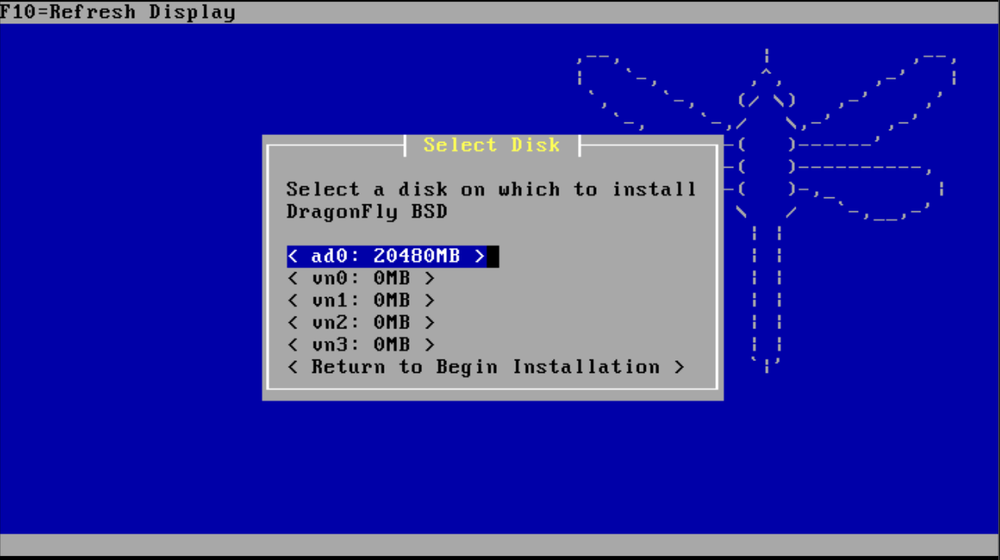

وقتی یک سنجاقک، چکش به دست میگیرد
احتمالا شما هم سیستمعامل DragonflyBSD را میشناسید، یا حداقل یک بار به گوشتان خورده است.
شروع این پروژه در سال ۲۰۰۳ توسط متیو دیلون (که از توسعهدهندگان اصلی پروژههای آمیگا و فریبیاسدی بود)، اتفاق افتاد. او با Fork کردن نسخه ۴.۸ فریبیاسدی، درب جدیدی را به دنیای بیاسدیها باز کرد. البته شاید اگر متیو با دیگر توسعهدهندگان، درباره نحوه پیادهسازی Threading و زیرسیستم SMP در سیستمعامل فریبیاسدی به اختلاف نمیخورد، هیچوقت چنین پروژهای خلق نمیشد. دیلون اعتقاد داشت مانیفستِ قفلگذاری کرنل در فریبیاسدی ۵ به سمت پیچیدگی بیش از حد رفته و کارایی را فدا میکند.

در ادامه، سعی میکنیم عمیقترین و جذابترین قابلیتهای فنی این سیستمعامل خاص را با هم بررسی کنیم:
فایلسیستم مدرن HAMMER2 و قابلیت های Clustering
مگر میشود از دراگونفلای صحبت کرد و حرفی از شاهکار متیو دیلون، یعنی سیستمفایل اختصاصی HAMMER به میان نیاورد؟ نسخه دوم این سیستمفایل (HAMMER2) اکنون فایلسیستم پیشفرض این سیستمعامل است و برای حل چالشهای مدرن ذخیرهسازی طراحی شده است.
برخی از ویژگیهای HAMMER2 عبارتند از:
- طراحی بدون نیاز به fsck: ساختار این سیستمفایل به گونهای است که حتی پس از کرشهای سنگین یا قطع ناگهانی برق، سیستمفایل بلافاصله پس از بوت در دسترس است و نیازی به اسکنهای طولانیمدت دیسک ندارد.
- تاریخچه زنده (Fine-grained history): این قابلیت شبیه به یک ماشین زمان واقعی عمل میکند. شما میتوانید به وضعیت فایلسیستم در بازههای زمانی مشخص در گذشته دسترسی داشته باشید، بدون اینکه افت کارایی ناشی از اسنپشاتهای سنتی را تجربه کنید.
- پشتیبانی از کپی در هنگام نوشتن (CoW) و فشردهسازی زنده: اطلاعات به صورت آنلاین فشردهسازی (Transparent Compression) میشوند و قابلیت حذف دادههای تکراری (Deduplication) کارایی فضا را به حداکثر میرساند.
یکی از جاهطلبانهترین اهداف در طراحی HAMMER2، یکپارچهسازی قابلیتهای شبکه و کلاسترینگ مستقیماً در لایه سیستمفایل است. این یعنی شما بدون نیاز به ابزارهای پیچیده جانبی (مثل Ceph یا GlusterFS)، میتوانید یک دیسک توزیعشده و بسیار در دسترس (High Availability) داشته باشید:
- معماری چند مستری (Multi-Master Replication): در HAMMER2 میتوانید چندین کپی فعال و همزمان (Master Nodes) از یک Volume روی ماشینهای مختلف شبکه داشته باشید. این گرهها به صورت آنلاین و دوطرفه تغییرات را همگامسازی (Sync) میکنند. اگر یکی از سرورها از مدار خارج شود، کلاستر بدون وقفه به کار خود ادامه میدهد.
- آرشیو و توزیع داده با Slave Nodes: علاوه بر گرههای Master، شما میتوانید گرههای Slave یا لایه Read-Only تعریف کنید. این معماری برای توزیع بار خواندن (Read Load-Balancing) روی سرورهای نزدیکتر و همچنین ایجاد آفسایت بکآپهای (Off-site Backups) آنی و بدون وقفه فوقالعاده کاربردی است.
- اتصالات شبکه بومی (Native Network Clustering): زیرسیستم کلاسترینگ HAMMER2 به طور مستقیم با پروتکلهای شبکه اختصاصی دراگونفلای جفت میشود تا کپی برداری و همگامسازی بلاکها در سطح شبکه کمترین میزان Latency و Overhead پردازشی را داشته باشد. این ویژگی به شما اجازه میدهد تا کلاسترهای بزرگ ذخیرهسازی را با پایداری بسیار بالا مدیریت کنید.
اطلاعات بیشتر
قابلیت VKernel (Virtual Kernel)
کرنل مجازی یا vkernel، پاشنه آشیانِ دراگونفلای برای توسعهدهندگان هسته است. این قابلیت امکان مجازیسازی کامل کرنل را در محیط Userland (فضای کاربری) فراهم میکند. بدین معنا که شما برای تست یک قابلیت، یک درایور جدید یا سیستمفایل، نیازی به شبیهسازهای سنگین یا Reboot کردن ماشین ندارید.
کافیست کرنل سفارشیسازی شده را مانند یک پروسس معمولی (مانند دستور ./kernel) در ترمینال خود لود کنید. این کرنل در یک محیط کاملاً ایزولهشده اجرا میشود، حافظه و دیسک مجازی خودش را مدیریت میکند و اگر به هر دلیلی کرش کند، سیستم اصلی شما (Host) هیچ آسیبی نمیبیند. اطلاعات بیشتر
مکانیزم Swapcache
وقتی سیستم با کمبود حافظه رم (RAM) مواجه میشود، دادههای موقت و غیرضروری را به دیسک منتقل میکند که به این فرآیند Swapping میگویند. در سیستمهای سنتی، این کار سرعت را به شدت فدای ظرفیت میکند.
مکانیزم Swapcache این امکان را فراهم میکند تا از یک حافظه پرسرعت (مانند یک درایو SSD یا NVMe) به عنوان لایه واسط (Cache) میان حافظه RAM و دیسکهای مکانیکی کندتر (HDD) استفاده کنید. ساختار مدیریت حافظه دراگونفلای با این روش نه تنها عملیات Swap را تسریع میکند، بلکه میتواند File-data و Meta-dataهای پرمصرف را نیز روی این لایه موقت کش کند تا لود سیستم به شدت بهینه شود. اطلاعات بیشتر
معماری LWKT (Lightweight Kernel Threads)
بزرگترین تمایز کرنل دراگونفلای با بقیه سیستمعامل ها، در نحوه مدیریت پردازش موازی (SMP) است. برخلاف معماری سنتی یونیکس و دیگر بیاسدیها که برای قفلگذاری روی منابع کرنل متکی به لایه پیچیده و سنگین Mutexها هستند، دراگونفلای از مدل «Thread های کرنل سبکوزن» یا همان LWKT استفاده میکند.
در این سیستم، مفهوم پیامرسانی درونکرنلی (In-kernel message passing) جایگزین زیرسیستمهای قفلگذاری رایج شده است. هر پردازنده Scheduler اختصاصی خودش را دارد؛ در نتیجه Thread های پردازشی به یک پردازنده خاص متصل (Bound) میشوند و به ندرت منتظر آزاد شدن منابع توسط پردازنده دیگر میمانند. این ایده که مستقیماً از زیرسیستمهای سیستمعامل نوستالژیک AmigaOS الهام گرفته شده، باعث میشود دراگونفلای در پردازشهای سنگین روی سرورهایی با تعداد هسته بالا، بازدهی فوقالعاده پایدار و بدون Bottleneck از خود نشان دهد.
When a Dragonfly Wields a Hammer: An Introduction to DragonFly BSD
You are likely already familiar with the DragonFly BSD operating system, or at least have heard its name.
The project was founded in 2003 by Matthew Dillon, a prominent developer behind both AmigaOS and FreeBSD. By forking FreeBSD 4.8, he opened an entirely new frontier in the BSD world. Had Dillon not diverged with other FreeBSD core developers over how threading and the SMP (Symmetric Multiprocessing) subsystem should be implemented in FreeBSD 5, this unique OS might never have come into existence. Dillon argued that the fine-grained kernel locking architecture in FreeBSD 5 introduced excessive complexity at the expense of overall performance and predictability.
Below, we explore the most fascinating and deeply engineered technical innovations that define this unique operating system:
HAMMER2: Next-Generation Filesystem & Native Clustering
No discussion of DragonFly BSD is complete without exploring Matthew Dillon's magnum opus: the HAMMER filesystem. Its second iteration, HAMMER2, is the default filesystem for DragonFly BSD, engineered from the ground up to solve modern high-density storage challenges.
Key architectural features of HAMMER2 include:
- Fsck-Free Design: The filesystem structures are organized such that even after catastrophic kernel crashes or sudden power loss, the filesystem is immediately mountable and consistent upon reboot without requiring lengthy disk recovery scans.
- Fine-Grained Live History: Operating much like a real-time time machine, HAMMER2 allows access to point-in-time filesystem snapshots across granular past windows without the performance degradation typically associated with traditional snapshot implementations.
- Copy-on-Write (CoW) & Transparent Compression: Data blocks are written using copy-on-write semantics alongside online transparent compression and deduplication to maximize storage utilization and data integrity.
One of the most ambitious design milestones in HAMMER2 is integrating network clustering primitives directly into the filesystem layer—providing distributed, highly available storage without relying on external orchestration layers like Ceph or GlusterFS:
- Multi-Master Replication: HAMMER2 allows active, simultaneous master replicas of a volume across multiple networked nodes. These nodes synchronize changes bi-directionally online; if one server fails, the cluster continues serving traffic without interruption.
- Data Distribution via Slave Nodes: In addition to master nodes, read-only slave targets can be defined. This architecture enables distributed read load-balancing across nearby nodes and seamless, non-disruptive off-site backups.
- Native Network Clustering: HAMMER2 clustering interfaces directly with DragonFly's custom transport protocols, ensuring block synchronization over the network incurs minimal latency and processing overhead. Learn more
Virtual Kernel (VKernel) Architecture
The Virtual Kernel, or vkernel, is DragonFly's playground for kernel and driver development. It allows a full DragonFly kernel to run virtualized in unprivileged userland space. This means developers can test new subsystems, device drivers, or experimental filesystems without needing heavy hypervisors or rebooting the host machine.
A custom kernel binary can be launched in a terminal like any standard userland process (./kernel). It executes in a strictly isolated environment, managing its own virtual memory and disk images. If it panics or crashes, the host operating system remains completely unaffected. Learn more
Swapcache: Intelligent Tiered Caching
When a system experiences memory pressure, it offloads inactive memory pages to disk in a process known as swapping. On conventional systems, swapping severely penalizes performance due to rotational disk latency.
The Swapcache subsystem introduces an intelligent intermediary caching layer, utilizing fast solid-state storage (such as NVMe or SSD drives) between volatile RAM and mechanical storage arrays. DragonFly's virtual memory subsystem uses Swapcache not only to accelerate paging operations, but also to transparently cache frequently accessed file data and filesystem metadata, drastically optimizing sustained server throughput. Learn more
Lightweight Kernel Threads (LWKT)
The defining hallmark of the DragonFly BSD kernel lies in its approach to symmetric multiprocessing (SMP). Rather than relying on heavyweight, multi-layered mutex locks to protect shared kernel resources across CPUs, DragonFly utilizes Lightweight Kernel Threads (LWKT).
In this architecture, an in-kernel asynchronous message-passing paradigm replaces conventional lock contention. Each physical CPU core manages its own dedicated scheduler; processing threads are bound to a specific CPU and rarely block waiting for shared resources held by another processor. Directly inspired by the elegant concepts of AmigaOS, this model guarantees high, bottleneck-free scaling under heavy parallel workloads on multi-core server platforms.